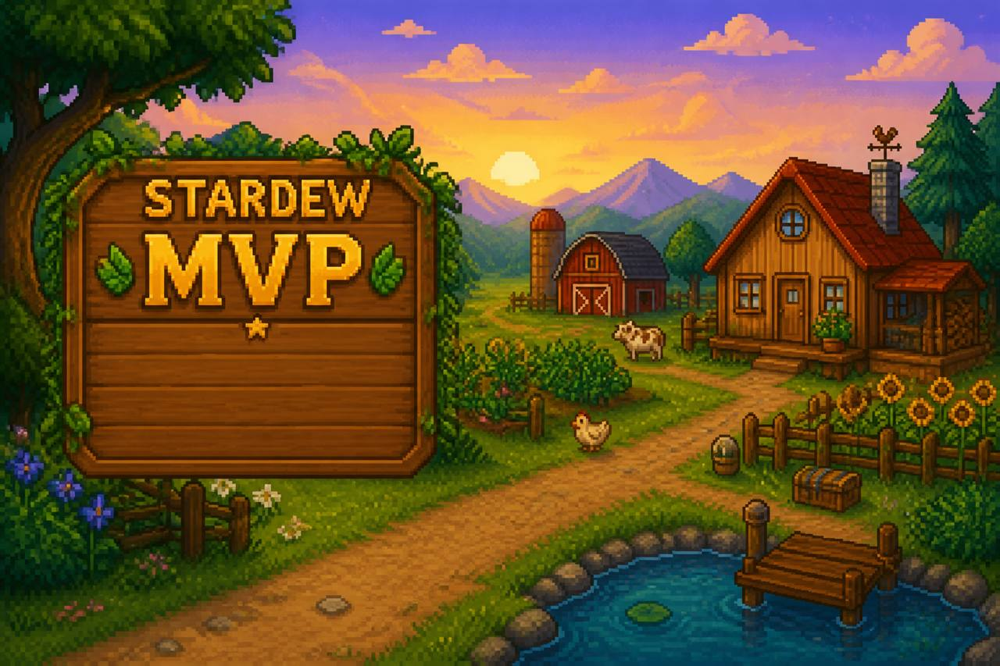

Valley First Year
Checklist-first Stardew Valley guides for players who want a calm Year 1—not a wiki dump.
Built for the questions new farmers actually ask
Most players do not need every crop table on day one. They need a short plan for energy, money, and what to ignore until later.
MVP focus: Twenty Year 1 guides covering seasons, energy, fishing, mines, festivals, social basics, animals, and money—built for AdSense-friendly depth without wiki dumps.
Starter guides
Twenty finished Year 1 guides—checklist-first, with real in-game screenshots.
Live
Year 1 Spring checklist
Quick answers, anti-FOMO skips, spend priorities, week rhythm, checklist, FAQ.
Live
Year 1 Summer: first week
Clear dead Spring crops, buy Summer seeds, replant a small patch.
Live
Morning routine checklist
Mail, TV weather, water, ship, one afternoon goal.
Live
Rainy day plans
Skip watering; pick mines, fishing, or clearing—then sleep.
Live
Spring foraging
Forest routes, eat vs chest vs ship, season deadline.
Live
Pet & sleep habits
Daily pet, bed before 2am, optional quest FOMO.
Live
Farm clearing
Small crop core, rainy axe sessions, leave the greenhouse.
Live
Tool upgrades at Clint’s
Which tool first, bars, watering-can downtime.
Live
Carpenter / Robin
Mountain shop, builds vs cosmetics, wood budgets.
Live
Animals / Marnie
Housing first, one animal, pet daily, delay week-one livestock.
Live
Flower Dance
How to get there; spectating is fine in Year 1.
Live
Gifting basics
Talk first, gift second, birthday tips, no romance rush.
Live
Energy: stop passing out
How to eat, Saloon food, Exhausted rules.
Live
Fishing basics
Cast, bite, green bar hold/release, Willy’s dock.
Live
Inventory & backpack
Full hotbar fixes, trash vs ship, Pierre’s upgrade.
Live
Early mines
Short trips, elevators, food, geodes.
Live
Museum donations
Gunther, geodes at Clint’s, keep vs sell.
Live
Traveling Cart
Friday/Sunday, browse-first, anti-FOMO buys.
Live
Community Center
Room priority, what to skip, bundles chest.
Live
Early money
Calm cash priorities, backpack vs seeds, spend FOMO.
User needs this MVP is answering
Research summary baked into the first release so the site stays useful instead of becoming another generic wiki mirror.
- 1. “I just started—what do I do today?” Need: a day/season checklist with priorities, not 40 open tabs.
- 2. “Am I falling behind?” Need: clear “optional vs important” calls so FOMO does not ruin the cozy loop.
- 3. “How do I make money without a spreadsheet?” Need: one practical route, one upgrade rule, and what not to buy yet.
- 4. “Wiki is huge—where do I begin?” Need: opinionated beginner paths with internal links, then deeper pages later.